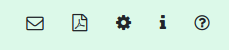
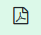
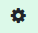
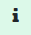

Instrucións de uso do simulador individual de produción fotovoltaica
Instrucións de uso do simulador individual de produción fotovoltaica
Paso 1- Localización:
Neste primeiro paso debemos identificar as zonas onde se poden instalar
paneis fotovoltaicos.
Ao desprazarse polo mapa podes localizar a zona de interese coa axuda dos
campos de localización ou, se os coñeces, introducindo directamente as
coordenadas de latitude e lonxitude no campo correspondente.
Unha vez visualizada a zona de traballo, deberase debuxar as zonas, polo
menos unha, nas que se poidan instalar os paneis.
A área pecharase automaticamente ao facer dobre clic.
Unha vez definida a zona, verás que na táboa debaixo do mapa aparece unha
fila na que tes os datos da zona definida. Agora procederemos a rematar de
configurar os seus detalles.
Nome: Se hai máis dunha base, é conveniente asignarlles un nome xa que a
aplicación asignará paneis a cada unha delas e mostrará esa asignación en
función do nome.
Inclinación do tellado: Se os paneis están instalados nun tellado, aquí
pode indicar o ángulo do tellado con respecto á horizontal do lugar.
Paso do panel: este é o ángulo no que se instalarán os paneis medido
desde o tellado.
Inclinación óptima: se quere que a aplicación calcule as inclinacións
óptimas, marque esta caixa e non introduza ningún valor nos campos
anteriores.
Orientación: Neste campo indicaremos a orientación que terán os paneis
con respecto ao sur xeográfico. En canto te posiciones no campo, verás que
no mapa aparece unha liña que che permite indicar a posible orientación
dos paneis, tendo en conta as condicións da cuberta.
Ángulos óptimos: se quere que a aplicación calcule todos os ángulos
óptimos, marque esta caixa e ignoraranse todos os anteriores.
Unha vez definida a localización e configuración da base na que se
instalarán os paneis, pódese facer clic na frecha "Seguinte" para pasar ao
seguinte paso.
Paso 2 - Datos de consumo:
Agora procederemos a definir o perfil de consumo e a tarifa actual do
contrato co comerciante a partir da táboa.
Identificación do consumo: Aquí pode dar un nome ao punto de consumo que
está a definir.
Fonte: Existen dúas formas de definir o perfil de consumo.
- Se dispón dun ficheiro CSV con consumos horarios obtido da súa
empresa distribuidora, seleccione a opción (Ficheiro individual de
consumos) en cuxo caso deberá identificar o ficheiro no campo
"Ficheiro de consumos horarios".
- Se non o tes, utiliza a opción de perfil estándar REE. Neste caso
debes introducir o consumo anual da explotación no campo "Consumo
anual".
Verás un mapa de cores co teu perfil de consumo. Premendo nel poderás ver
o perfil de consumo dun día concreto.
Selección do tipo de tarifa (2.0TD ou 3.0TD) que se utilizará na
simulación.
Unha vez seleccionada a tarifa, a aplicación propón prezos. Os de SOM
Energia propóñense inicialmente. Se non son os correctos actualizaranse
aos valores que resulten adecuados antes de realizar o cálculo.
Unha vez alcanzado este punto, podes facer clic no botón "Seguinte".
Paso 3 - Balance enerxético
Nesta pestana verás os resultados da primeira proposta realizada polo
sistema. Neste caso, os criterios de asignación do panel son:
Definir un número suficiente de paneis para xerar a enerxía necesaria
para cubrir o consumo dun ano.
Verifique que a superficie dispoñible nas bases definidas no paso 1 é
suficiente para xerar esa enerxía. Se non o están, móstrase un aviso.
Ir asignando paneis ás bases dando prioridade ás bases máis eficientes
desde o punto de vista do rendemento enerxético.
No resto da pestana pódese ver un conxunto de datos de interese obtidos
desta configuración.
Neste momento pode ser interesante mirar o resto das pestanas para valorar a
situación e antes de decidir cambiar o número de paneis ou a súa potencia
individual.
En todo caso, desde esta pestana podes modificar os paneis asignados a cada
base segundo o teu propio criterio. Solidar verificará que non pode colocar
máis paneis dos que permite a superficie definida no paso 1 para a vivenda
base.
Paso 4 - Balance Económico
Aquí podes ver cal é o resultado desde o punto de vista económico financeiro
da instalación dos paneis definidos no paso 3.
É importante destacar algúns campos existentes nesta pestana:
O custo anual, con ou sen placas e polo tanto o aforro, está moi
condicionado polas tarifas definidas no paso 2 de consumo.
Dada a volatilidade dos prezos, e as variacións detectadas por rexións,
resulta moi difícil estimar un prezo da instalación. Propoñémosche un cos
presupostos que temos, pero o correcto é que consultes cun instalador.
Pode corrixir o prezo que propoñemos indicando unha porcentaxe positiva
para aumentar o prezo ou unha porcentaxe negativa para diminuílo no campo
"Corrección de prezos en %".
Cos datos previamente definidos, a aplicación mostrará un cadro
financeiro co estudo do retorno do investimento previsto.
Para esta táboa é fundamental definir nos campos que se indican para tal
fin se existe algún tipo de subvención a aplicar con cargo aos fondos Next
Generation ou a redución do IBI que aplican algúns concellos.
5 - Gráficos
Nesta pestana pódense ver algúns gráficos que mostran o comportamento
mensual do sistema proposto.
6 - Resumo
Móstrase un resumo de todas as variables introducidas e calculadas para esta
simulación.
Pódense facer varios ciclos de proba cambiando a configuración da
instalación <Paneis> ou <Potencia por panel>. Este cambio pódese
facer desde a pestana <Balance enerxético>. A aplicación realizará os
cálculos correspondentes automaticamente.
Na pestana <Parámetros>, que se activa dende a icona de
ferramentas, pódense actualizar varios parámetros utilizados no cálculo.
Os cambios realizados nesta pestana reflectiranse no seguinte cálculo.
No menú situado na parte superior dereita podes seleccionar as seguintes
opcións, de esquerda a dereita:

|
Formulario de contacto desde onde podes enviarnos os teus
comentarios, así como informar de posibles erros ou melloras que
consideres oportunas. |

|
Xera un informe PDF da simulación activa. |

|
Ferramentas para cambiar calquera dos parámetros empregados pola
aplicación. |
|  |
Abre este documento. |
|
Activa un panel á dereita da pantalla cunha guía explicativa para
a pestana na que te atopas actualmente. |